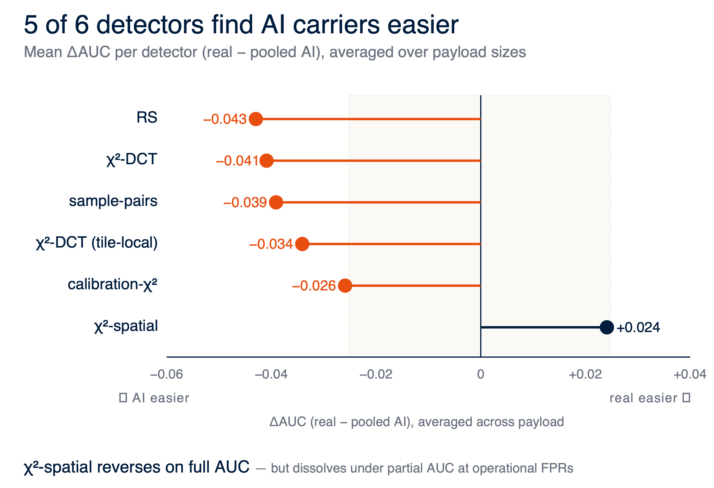
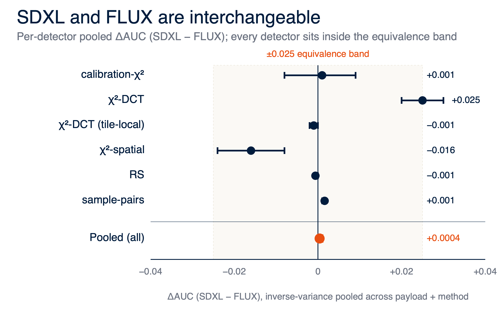
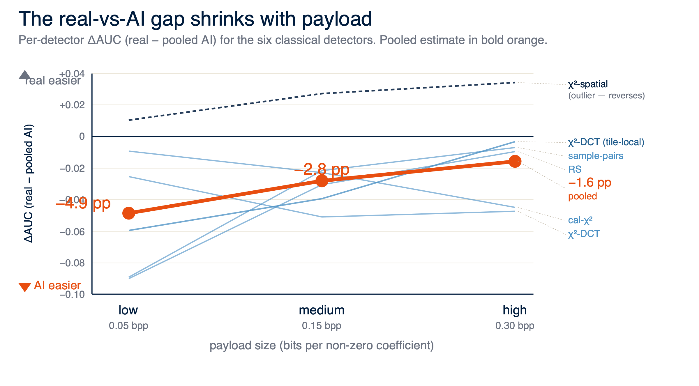
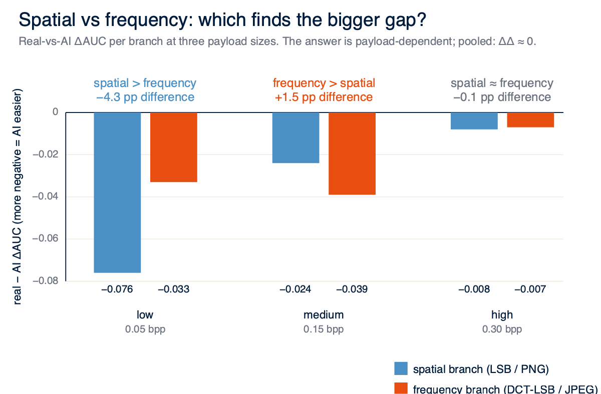
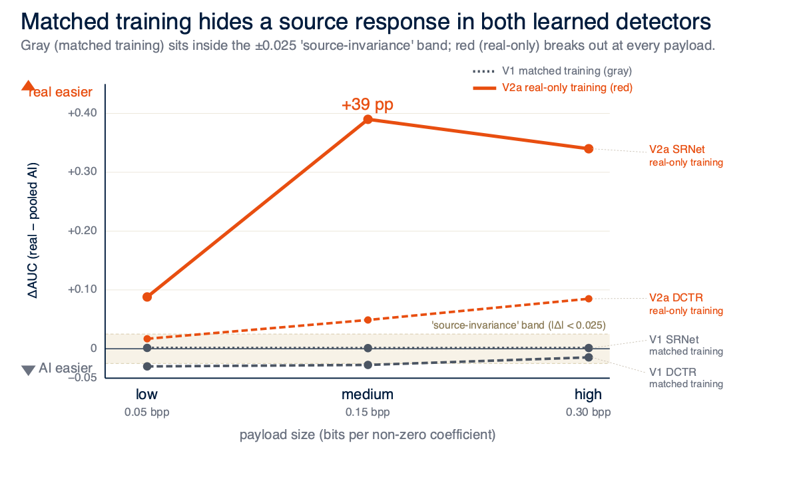
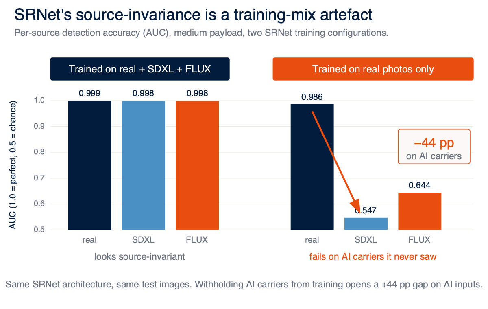
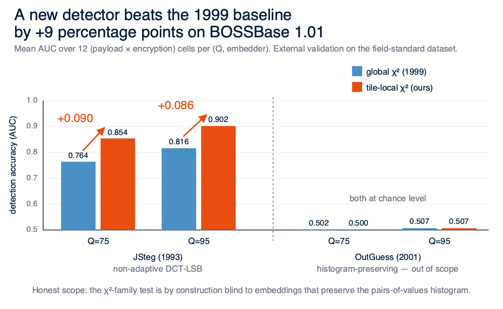

Can a detector still catch a secret hidden in an AI image?
Steganalysis was built and benchmarked on real camera photographs. As AI image generators flood the internet with carriers no detector has ever seen, can the field still spot a hidden message? We test eight detectors across real and AI carriers, three payload sizes, two embedding modes, and uncover a methodological trap that quietly undermines modern deep-learning detection.
Source matters, but less than payload, and far less than how the detector was trained.
Spot the difference.
One of these images hides a 6,000-character message. The other is the unmodified original. They are pixel-identical to within ~0.03%. Steganalysis is the work of finding the one that isn't.
- Class
- cover image
- Payload
- none
- SHA-1
- 2a4d…c91f
- Class
- stego image
- Payload
- 6,000 chars · LSB-DCT · 0.30 bpp
- SHA-1
- 9e1b…3a07
What is steganography?
Digital images can carry hidden messages. Not by encrypting them, but by flipping the least-significant bits of pixels or DCT coefficients to spell out the message in a way no human eye can see. Steganalysis is the inverse: detecting that a message is there, from the statistical traces it leaves behind.
Why does the source matter?
Detection methods were built on real camera photos. SDXL and FLUX generate pixels very differently. That mismatch could make a hidden message easier or harder to spot, or, worse, make detectors look reliable in the lab while failing in the wild. Nobody had tested this systematically.
Source matters, barely.


Five of six classical detectors find AI carriers easier to attack — but only by ~4 percentage points. The single outlier (χ2-spatial) reverses on full AUC but dissolves under partial AUC at operational FPRs.
SDXL and FLUX are statistically interchangeable: every per-source AUC difference sits inside the ±0.025 equivalence band; pooled SDXL−FLUX gap = +0.0004.
Payload matters more.
The real-vs-AI gap shrinks monotonically as the message grows. Pooled across all 8 detectors:
More embedded bits drive the cover and stego distributions further apart, washing out any source-dependent baseline. By high payload the residual gap sits inside the ±0.025 equivalence band.
Implication: detectors stress-tested only at high payloads will look source-invariant, hiding the real source effect that surfaces at low payloads. Whichever branch wins (spatial or frequency) is itself payload-dependent; no universal winner.


Training matters most.

Deep-learning detectors look source-invariant until you change what they train on. Strip AI carriers from training and the source response snaps open: both learned detectors exit the ±0.025 band; SRNet's gap balloons by two orders of magnitude.


- Sources
- MS-COCO real + SDXL + FLUX generations
- Payload
- 0.05 / 0.15 / 0.30 bpp (low / med / high)
- Embed
- spatial-LSB + DCT-LSB
- Crypto
- plain + AES-CTR encrypted streams
- Stats
- AUC, partial AUC, P_E min; DeLong + caption-clustered bootstrap